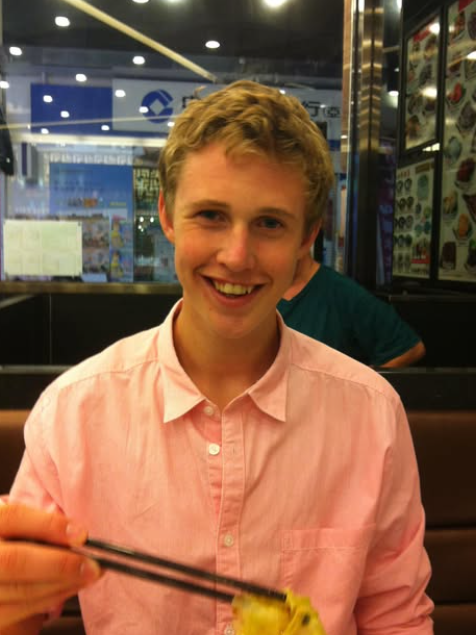

Mener at Simen Eide Trollvik løp 7,6 på 60 m, så jeg skal ikke få unødvendig mye creds her :)
- Markus Kvillum Kildahl, 2022 (Ydmykhetens mester)
Overvann? Det er ikke bare vann som renner over - det er en livsfilosofi.
- Markus Kvillum Kildahl (sannsynligvis)
Jeg redder ikke bare vannledninger, jeg redder sivilisasjoner.
- Markus Kvillum Kildahl (definitivt)
De sa jeg ikke kunne kombinere bandy og ingeniørfag. Jeg sa: Hold min vannprøve.
- Markus Kvillum Kildahl (inspirerende)